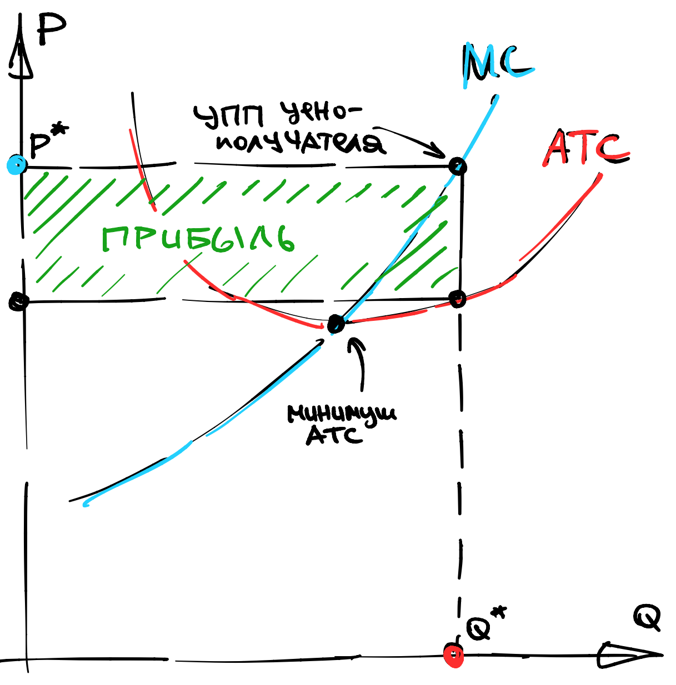
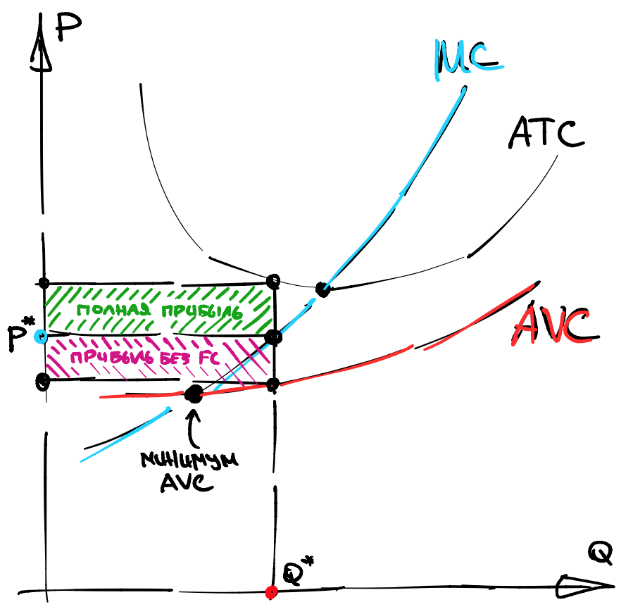

Шестая лекция, часть 1#
В этой секции я буду использовать \(Q\) для обозначения объемов производства (не путать с ценами факторов \(q\)).
Средние издержки#
Несмотря на доминирование маржиналистского подхода в экономике, некоторые фирмы устанавливают объем производства так, чтобы средние издержки плюс какая-то субъективная (например, 10%) маржа были равны рыночной цене. Это не имеет никакого смысла с точки зрения максимизации прибыли, так как прибыль в таком случае будет всегда равна нулю. Единственный смысл в том, что средние издержки легко считаются.
Note
Средние издержки, или \(ATC(Q)\) - это отношение общих издержек, \(TC(Q)\), к объему производства:
Действительно, монопольная фирма использует правило обратной эластичности
а конкурентная фирма использует правило \(P = MC(Q)\). Но у функции \(ATC(Q)\) есть одно интересное свойство:
Attention
Цена, при которой прибыль конкурентной фирмы равна нулю, определяется любым из двух способов:
Это минимум \(ATC(Q)\) по \(Q\);
Это пересечение \(ATC(Q)\) и \(MC(Q)\).
В частности, это означает, что кривые \(ATC(Q)\) и \(MC(Q)\) пересекаются в той же точке, где у \(ATC(Q)\) минимум. Запомните эту картинку “трезубец”:
{kind=link}
Откуда берется такая форма? Из-за фиксированных издержек. Назовем переменными издержками \(VC(Q) = TC(Q) - FC\), тогда
Заметим, что первый член убывает гиперболически, а второй член возрастает (как-то), потому что функция \(TC(Q)\) выпукла, а значит выпукла и \(VC(Q)\), а значит должна расти сверхлинейно, ну или хотя бы линейно.
Поэтому считается, что \(ATC(Q)\) имеет U-образную форму. Единственный случай, когда это неверно - это когда фиксированных издержек нет совсем.
Точка закрытия в долгосрочном периоде#
На той же картинке “трезубец” мы можем изобразить прибыль фирмы - это площадь прямоугольника со сторонами \(Q\) и \(ATC(Q)-P\).
Note
Назовем пересечение \(MC(Q)\) с \(ATC(Q)\) точкой закрытия в долгосрочном периоде. Для этого я буду использовать обозначение \(MC \cap ATC\).
Почему в долгосрочном? А потому, что фиксированные издержки (завод, лицензия…) можно “отбить” только в долгосрочном периоде. Очевидно следующее:
Attention
Если цена падает ниже уровня \(MC \cap ATC\), то производитель готов уйти с рынка в долгосрочном периоде.
Что означает закрытие в долгосрочном периоде на практике? Например, хозяин бизнеса увольняет всех рабочих, распродает активы и уходит (с деньгами) с рынка.
А что будет происходить в краткосрочном периоде?
Точка закрытия в краткосрочном периоде#
Поразительно, но если цена падает ниже уровня \(MC \cap ATC\) в краткосрочном периоде, то производитель какое-то время может продолжать работать в убыток. Почему?
Дело в том, что в краткосрочном периоде производитель не воспринимает константу \(FC\) как что-то в его власти. Поэтому он везде видит переменные издержки вместо общих.
Note
Средние переменные издержки, или \(AVC(Q)\), - это отношение переменных издержек, \(VC(Q)\), к объему производства:
На той же картинке “трезубец” мы можем изобразить прибыль фирмы за вычетом фиксированных издержек. Это площадь прямоугольника со сторонами \(Q\) и \(AVC(Q)-P\):
{kind=link}
Note
Назовем пересечение \(MC\) с \(AVC\) точкой закрытия в краткосрочном периоде. Для этого я буду использовать обозначение \(MC \cap AVC\).
Эта новая точка закрытия не выше предыдущей, поскольку \(AVC\) всегда не выше \(ATC\). Если цена продолжает падать и достигает этого более низкого уровня, то прибыль, даже без учета \(FC\), становится нулевой.
Attention
Если цена падает ниже уровня \(MC \cap AVC\), то производитель останавливает производство в краткосрочном периоде.
Что означает закрытие в краткосрочном периоде на практике? Это означает, что завод стоит, но на нем никто ничего не производит, то есть \(Q=0\).
Сторож охраняет вход, а владелец бизнеса ждет, когда цена отскочит назад, и постепенно думает, кому бы продать завод в краткосрочном периоде.
Пример#
Рассмотрим два завода: высокотехнологичный и “так себе”.
Высокотехнологичный завод обладает высокими фиксированными издержками, но низкими переменными:
“Так себе” завод наспех организован в поле, поэтому обладает нулевыми фиксированными издержками, но высокими переменными:
Проанализируем точки закрытия каждого из этих заводов в долгосрочном периоде.
Для первого завода это решение уравнения:
Нам повезло - корень целый, и в точке закрытия высокотехнологичного завода цена равна \(P=3\).
Для второго завода это решение уравнения:
В точке закрытия “так себе” завода цена равна \(P=2\).
Какой из этого можно сделать вывод?
При падении цены первыми терпеть убытки начинают высокотехнологичные заводы. Низкотехнологичные заводы продолжают какое-то время получать прибыль из-за того, что их фиксированные издержки малы.
Монополистическая конкуренция#
Предположим, что есть убывающая кривая спроса на товар, скажем, \(P(Q) = 100 - Q\), и фирмы могут свободно заходить и выходить с рынка.
Предположим также, что у каждой фирмы есть фиксированные издержки входа на рынок, равные \(FC\). Понятно, что весь излишек потребителя конечен - это площадь под кривой. С другой стороны, каждая фирма платит \(FC\) за вход, значит, количество фирм не может быть очень большим.
Note
Назовем долгосрочным равновесием, или равновесием в монополистической конкуренции, равновесную цену, объемы производства фирм и максимальное число фирм, такое, что их прибыль (в долгосрочном периоде) неотрицательная.
Пример#
Рассмотрим пример поиска такого равновесия.
Пусть есть много идентичных фирм.
Обозначим суммарный объем производства за \(Q_{\sum} = \sum Q_i\).
Пусть спрос описывается функцией \(P(Q_{\sum}) = 100 - Q_{\sum}\).
Пусть постоянные и переменные издержки равны, соответственно,
Пусть число фирм равно \(n\). Каждая фирма выбирает \(Q_i\) так, что \(P = MC(Q_i)\), то есть в нашем случае, \(Q_i = P\). Это значит, что суммарное предложение равно:
Теперь найдем \(n\), такое, что цена опустится в точку закрытия. Для этого запишем \(MC\), \(ATC\):
Приравняв их друг к другу, мы получим:
Теперь надо соединить вместе оптимальное поведение фирмы, условие на закрытие рынка и формулу спроса:
Это система из трех уравнений и трех неизвестных, откуда мы можем вычислить число фирм, которое обеспечит неотрицательную прибыль, но только надо взять ближайшее целое число снизу:
С 69 фирмами прибыль будет слишком маленькой для того, чтобы новая фирма вошла на рынок, но все же положительной. Чтобы найти её, надо пересчитать все заново:
Получается, \(P = Q_i = 10/7\). Выручка приблизительно равна \(2.04\), фиксированные издержки равны \(1\), а переменные издержки равны примерно \(1.02\).
Соответственно, прибыль фирмы примерно равна \(0.02\).